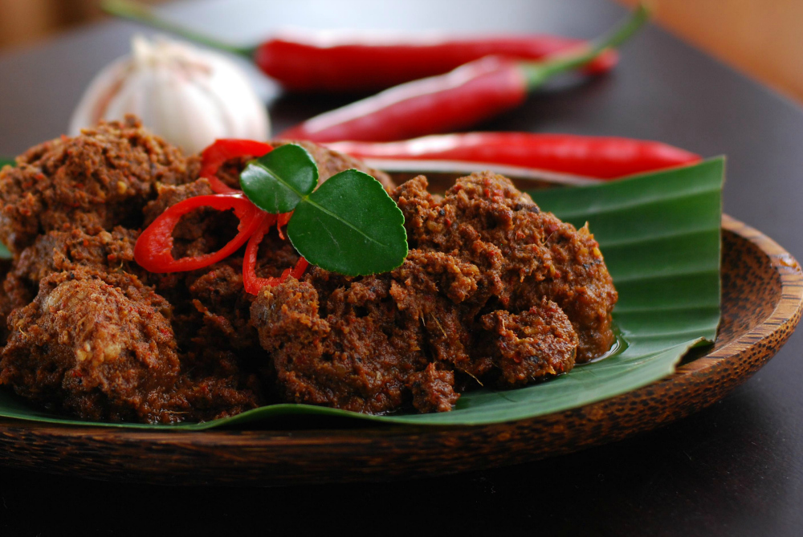

RENDANG
Rendang (Minangkabau: randang; Jawi: رندڠ) adalah hidangan berbahan dasar daging yang dihasilkan dari proses memasak suhu rendah dalam waktu lama dengan menggunakan aneka rempah-rempah dan santan. Proses memasaknya memakan waktu berjam-jam (biasanya sekitar empat jam) hingga yang tinggal hanyalah potongan daging berwarna hitam pekat dan dedak. Dalam suhu ruangan, rendang dapat bertahan hingga berminggu-minggu. Rendang yang dimasak dalam waktu yang lebih singkat dan santannya belum mengering disebut kalio, berwarna cokelat terang keemasan.
Secara simbolik, dagiang (daging sapi) melambangkan "niniak mamak" (para pemimpin suku adat), karambia (kelapa) melambangkan "cadiak pandai" (kaum Intelektual), lado (cabai) melambangkan "alim ilama" yang tegas untuk mengajarkan syariat agama, dan pemasak (bumbu) melambangkan keseluruhan masyarakat Minangkabau.
Dalam tradisi Minangkabau, rendang adalah hidangan yang wajib disajikan dalam setiap perayaan adat, seperti berbagai upacara adat Minangkabau, kenduri, atau menyambut tamu kehormatan.Dalam tradisi Melayu, baik di Riau, Jambi, Bengkulu, Palembang, Lampung, Medan atau Semenanjung Malaya, rendang menjadi hidangan istimewa yang dihidangkan dalam kenduri khitanan, ulang tahun, pernikahan, barzanji, atau perhelatan keagamaan, seperti Idul Fitri dan Idul Qurban.